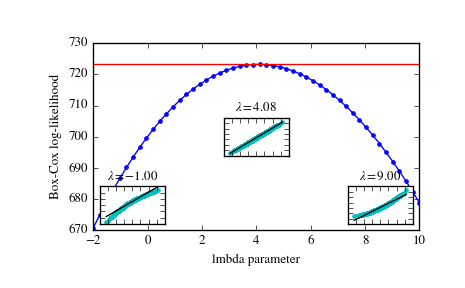

scipy.stats.boxcox_llf¶
- scipy.stats.boxcox_llf(lmb, data)[source]¶
The boxcox log-likelihood function.
Parameters: lmb : scalar
Parameter for Box-Cox transformation. See boxcox for details.
data : array_like
Data to calculate Box-Cox log-likelihood for. If data is multi-dimensional, the log-likelihood is calculated along the first axis.
Returns: llf : float or ndarray
Box-Cox log-likelihood of data given lmb. A float for 1-D data, an array otherwise.
See also
Notes
The Box-Cox log-likelihood function is defined here as
\[llf = (\lambda - 1) \sum_i(\log(x_i)) - N/2 \log(\sum_i (y_i - \bar{y})^2 / N),\]where y is the Box-Cox transformed input data x.
Examples
>>> from scipy import stats >>> import matplotlib.pyplot as plt >>> from mpl_toolkits.axes_grid1.inset_locator import inset_axes >>> np.random.seed(1245)
Generate some random variates and calculate Box-Cox log-likelihood values for them for a range of lmbda values:
>>> x = stats.loggamma.rvs(5, loc=10, size=1000) >>> lmbdas = np.linspace(-2, 10) >>> llf = np.zeros(lmbdas.shape, dtype=np.float) >>> for ii, lmbda in enumerate(lmbdas): ... llf[ii] = stats.boxcox_llf(lmbda, x)
Also find the optimal lmbda value with boxcox:
>>> x_most_normal, lmbda_optimal = stats.boxcox(x)
Plot the log-likelihood as function of lmbda. Add the optimal lmbda as a horizontal line to check that that’s really the optimum:
>>> fig = plt.figure() >>> ax = fig.add_subplot(111) >>> ax.plot(lmbdas, llf, 'b.-') >>> ax.axhline(stats.boxcox_llf(lmbda_optimal, x), color='r') >>> ax.set_xlabel('lmbda parameter') >>> ax.set_ylabel('Box-Cox log-likelihood')
Now add some probability plots to show that where the log-likelihood is maximized the data transformed with boxcox looks closest to normal:
>>> locs = [3, 10, 4] # 'lower left', 'center', 'lower right' >>> for lmbda, loc in zip([-1, lmbda_optimal, 9], locs): ... xt = stats.boxcox(x, lmbda=lmbda) ... (osm, osr), (slope, intercept, r_sq) = stats.probplot(xt) ... ax_inset = inset_axes(ax, width="20%", height="20%", loc=loc) ... ax_inset.plot(osm, osr, 'c.', osm, slope*osm + intercept, 'k-') ... ax_inset.set_xticklabels([]) ... ax_inset.set_yticklabels([]) ... ax_inset.set_title('$\lambda=%1.2f$' % lmbda)
>>> plt.show()
